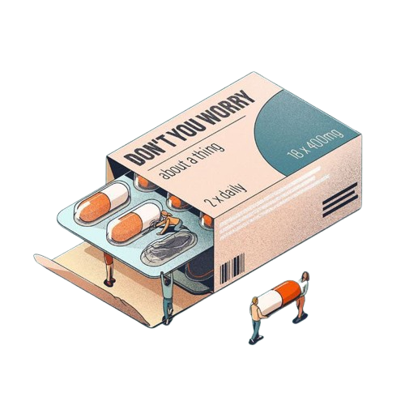

معاك في كل مكان
any time
بأسهل طريقة
نوفر جميع أنواع الأدوية والعلاجات الطبية بأفضل الأسعار وبخدمة سريعة.
تعرف على مجموعة متنوعة من المكملات الغذائية والفيتامينات لتحسين صحتك.
منتجات مضمونة من أشهر الماركات العالمية للعناية ببشرتك.
any time
| العميل | التعليق | التاريخ |
|---|---|---|
| أحمد محمد | خدمة ممتازة وسريعة، استلمت أدويتي في الوقت المحدد. | 15/12/2024 |
| سارة علي | موقع رائع وأسعار جيدة. شكراً لكم! | 14/12/2024 |
| محمود خالد | أكثر من ممتاز! سهل استخدام الموقع، وسريع في التوصيل. | 13/12/2024 |
1. استخدم الأدوية بحذر ووفقًا لتعليمات الطبيب
تأكد من اتباع تعليمات الطبيب أو الصيدلي بدقة عند تناول الأدوية.
لا تقم بتغيير الجرعة أو توقيت تناول الأدوية بدون استشارة طبية.
احتفظ بسجل لمواعيد الأدوية التي تتناولها لتجنب التناسي.
2. ابحث عن بدائل طبيعية للأدوية عند الحاجة
في بعض الحالات، يمكن أن تساعد العلاجات الطبيعية أو المكملات الغذائية في تخفيف الأعراض.
استشر الصيدلي أو الطبيب لاختيار البدائل الطبيعية المناسبة لحالتك.
3. تحقق من تاريخ صلاحية الأدوية قبل استخدامها
تأكد دائمًا من التحقق من تاريخ صلاحية الأدوية قبل استخدامها، لا سيما الأدوية التي يتم تخزينها لفترات طويلة.
لا تستخدم الأدوية منتهية الصلاحية لأنها قد تكون غير فعالة أو ضارة.
4. مراجعة مكونات الأدوية إذا كان لديك حساسية
إذا كنت تعاني من حساسية تجاه أي مكون من مكونات الأدوية، تأكد من قراءة المكونات المدرجة على العبوة.
استشر الصيدلي إذا كنت غير متأكد من أمان المنتج بالنسبة لك.
5. الحفاظ على الأدوية بعيدًا عن متناول الأطفال
احفظ الأدوية في مكان آمن بعيدًا عن الأطفال لضمان سلامتهم.
تأكد من إغلاق العبوات بإحكام بعد استخدامها.
6. تواصل مع الصيدلي إذا كنت تشعر بأي آثار جانبية
إذا شعرت بأي آثار جانبية بعد تناول دواء، مثل دوار أو غثيان، تواصل مع الصيدلي فورًا.
لا تتردد في السؤال عن أي آثار جانبية قد تكون ناتجة عن الأدوية التي تتناولها.
7. استخدم شريط البحث للعثور على الأدوية بسهولة
إذا كنت تبحث عن دواء أو منتج معين على موقعنا، استخدم شريط البحث لتوفير الوقت والجهد.
يمكنك أيضًا تصنيف الأدوية حسب النوع أو الفئة لتسهيل الوصول إلى ما تحتاجه.
8. تأكد من شراء الأدوية من مصادر موثوقة
تأكد دائمًا من شراء الأدوية من صيدلية موثوقة ومعترف بها لضمان جودتها وسلامتها.
في حال كان لديك أي شكوك حول المنتج، يمكنك استشارة الصيدلي.
9. اطلب الأدوية التي تحتاج إليها بشكل منتظم
إذا كنت بحاجة إلى أدوية بشكل دوري أو شهري (مثل أدوية السكري أو الضغط)، يمكنك الاشتراك في خدمة الطلبات الشهرية لضمان عدم نفاد الأدوية.
10. تسوق الأدوية والمكملات الغذائية بأمان عبر الإنترنت
تسوق بثقة عبر موقعنا حيث نقدم منتجات عالية الجودة مع خدمة توصيل آمنة.
تأكد من استخدام طرق الدفع الآمنة عند إتمام عملية الشراء عبر الإنترنت.
11. تأكد من توافق الأدوية مع العلاجات الأخرى
إذا كنت تتناول أدوية أخرى لعلاج حالات صحية مختلفة، تأكد من استشارة الطبيب أو الصيدلي لمعرفة إذا كان هناك تداخل بين الأدوية قد يؤثر على فعاليتها.
12. اتباع أسلوب حياة صحي
إلى جانب تناول الأدوية، احرص على اتباع أسلوب حياة صحي من خلال التغذية السليمة، ممارسة الرياضة، والنوم الجيد.
الحفاظ على نمط حياة صحي يساهم في تحسين فعالية الأدوية ويساعدك على التعافي بشكل أسرع.
13. ابق على تواصل مع فريقنا الطبي
إذا كنت بحاجة إلى أي استشارات طبية أو لديك أي استفسار حول الأدوية أو العلاجات، لا تتردد في التواصل مع فريقنا المتخصص.
نحن هنا لتقديم الدعم والإجابة على جميع استفساراتك.
14. تجنب تناول الأدوية المقررة لأشخاص آخرين
لا تتناول الأدوية التي تم وصفها لشخص آخر، حتى لو كانت حالتك مشابهة. لكل شخص حالته الصحية واحتياجاته الخاصة.
15. الاحتفاظ بمعلومات طبية محدثة
حافظ على تحديث سجل الأدوية الخاص بك، بحيث يمكن لطبيبك أو صيدلك أن يقدم لك المشورة الأفضل إذا كنت بحاجة إلى استبدال دواء أو تعديل الجرعة.